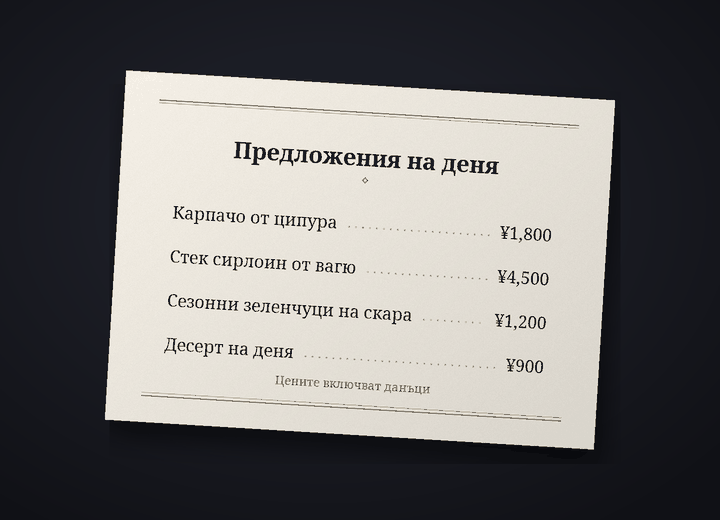

Бот за превод на чата в Discord
Общувайте в Discord – всеки на своя език
Cozirom е бот за Discord, който превежда чата на езика на събеседника. Включете го и съобщенията ви ще се публикуват преведени, с вашето име и профилна снимка. Превежда и текста в изображенията.
Преводите се правят от ИИ (Claude на Anthropic). Възможни са грешки, затова при важни неща проверете и оригинала.
Какво може ботът
Един бот превежда текст, изображения и глас
Лимитите на плановете се броят в преводи. Едно съобщение, преведено на един език, е 1 превод.
6 функции
Брой преводи
Автоматичен превод
Въведете веднъж
/превод вкли съобщенията ви в този сървър ще се публикуват на езика на събеседника, с вашето име и профилна снимка. Оригиналът остава под превода с дребен шрифт, а бутонът показва целия оригинал.
показва целия оригинал.Преводи1 на съобщение
Текст в изображения
Менюта, екрани от игри, мемета: ако в изображението има текст, той се прочита и превежда. Преводът се отваря от иконата
 под изображенията на хората, включили превода, или чрез превод с десен бутон. Резултата вижда само този, който го е поискал, а изображенията без текст не се броят.
под изображенията на хората, включили превода, или чрез превод с десен бутон. Резултата вижда само този, който го е поискал, а изображенията без текст не се броят.ПреводиОколо 9 на изображение
Превод върху изображението
С иконата
 получавате копие на изображението, в което оригиналният текст е изтрит, а на негово място е изписан преводът. Първоначално шрифтът е „Като оригинала“, близък до оригиналния надпис, а можете да превключвате и между комплектите шрифтове (до 10), като „Серифен“, „Ръкописен“ и „Комикс“, без това да се брои. Работи най-добре с хоризонтален текст като екранни снимки, мемета, екрани от игри и менюта, а резултатът се вижда само от този, който е натиснал.
получавате копие на изображението, в което оригиналният текст е изтрит, а на негово място е изписан преводът. Първоначално шрифтът е „Като оригинала“, близък до оригиналния надпис, а можете да превключвате и между комплектите шрифтове (до 10), като „Серифен“, „Ръкописен“ и „Комикс“, без това да се брои. Работи най-добре с хоризонтален текст като екранни снимки, мемета, екрани от игри и менюта, а резултатът се вижда само от този, който е натиснал.ПреводиОколо 19 на изображение


Пример: оригиналната снимка (меню на японски) и същата снимка, в която текстът е изтрит, а на негово място е изписан преводът на български със шрифта „Серифен“. Гласови съобщения
Щракнете с десния бутон върху гласово съобщение, изпратено от мобилното приложение, и ще получите казаното като текст заедно с превода му. Транскрибират се съобщения до 3 минути, а съобщенията без говор не се броят.
Преводи1 на секунда плюс превода10-секундно съобщение – обикновено 11
Четири тона
Сленг, непринуден, приятелски или официален тон – избирате за всеки сървър. С приятели на ти, на ново място на Вие. С плана Guest (безплатен) имате и четирите тона през първите 14 дни, а после остава приятелският.
ПреводиПлатени: и четирите. Free: първите 14 дни
31 езика
Превежда се на 31 езика. Екраните на бота и имената на командите са на 30 езика на Discord, така че събеседникът настройва бота на своя език.
Преводи31 за превод, 30 за интерфейса

Как да започнете
Три стъпки и преводът се появява с вашето име
Добавете бота в сървъра
Администратор на сървъра добавя бота в сървъра. Поканата можете да поискате в сървъра за поддръжка.
Включете превода
Всеки, който иска съобщенията му да се превеждат, въвежда
/превод вклв този сървър. Ботът отгатва вашия език и езика на събеседника и отваря панела с настройки. Ако нещо не е вярно, сменете го в падащите менюта.Пишете както обикновено
Пишете както обикновено и преводът ще се появи с вашето име. Започнете с плана Guest (безплатен), а ако ви трябва повече, сменете плана от страницата с плановете.
Поверителност
Съобщенията за превод и изображенията се изпращат само до Anthropic (САЩ), а звукът от гласовите съобщения – само до Google (САЩ). Ботът пази оригинала на публикувания превод 14 дни, а кеша с преводи – 30 дни, и не съхранява изображения, звук или прочетения от тях текст. Съдържанието на чатовете никога не влиза в логовете, а с /превод изтрий-данните-ми можете по всяко време да изтриете данните си.